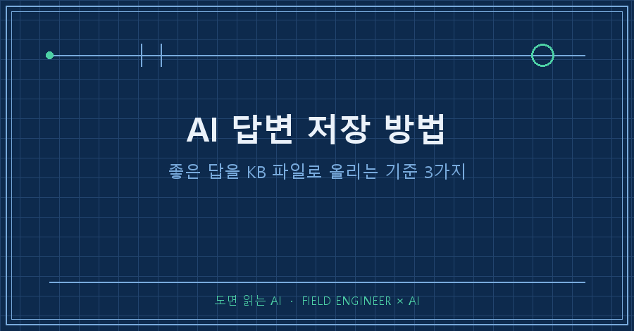
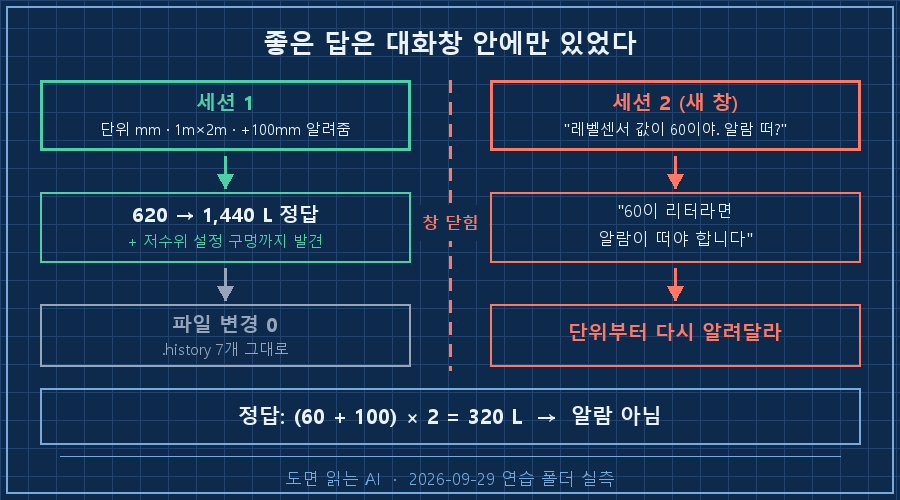
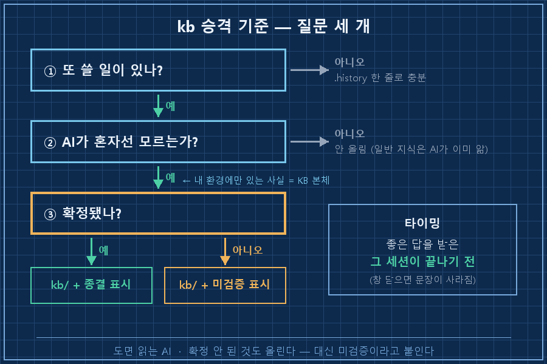
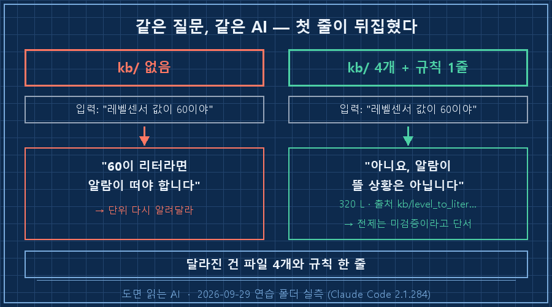
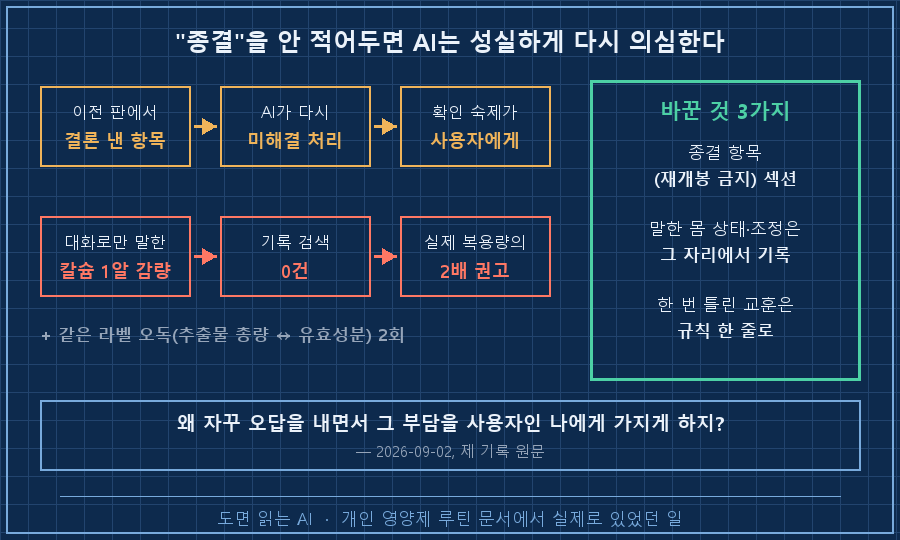

AI 답변 저장은 "좋은 답을 받은 그 세션 안에서" 해야 합니다. 창을 닫기 전에 "방금 알아낸 거 kb/ 폴더에 지식 파일로 올려줘" 한 줄을 치고, 규칙 파일에 "답하기 전에 kb/ 먼저 본다"를 적어두면 끝이에요. 올릴지 말지는 세 가지로 가릅니다. 또 쓸 일이 있나, AI가 혼자선 알 수 없는 건가, 확정된 건가.
지난 편까지 끝난 일(.history)과 하다 만 일(_이어가기)을 남기는 파일을 만들었죠. 이번 편은 세 번째 칸, 대화 중에 알게 된 것을 담는 폴더입니다.
저는 설비 제어로 15년을 먹고산 엔지니어고, 이 연재는 퇴근 후 제 PC에 AI 작업 환경을 짜온 기록이에요. 아래 출력은 전부 2026년 9월 29일 연습 폴더에서 Claude Code(2.1.284)로 돌린 화면 그대로입니다. 지난 편처럼 AI 자동 메모리는 끄고 돌렸어요.
1. 좋은 답을 받았는데, 파일은 한 줄도 안 바뀌었어요
연습 폴더는 지난 편 그대로입니다. 물탱크 알람 임계값이 리터로 적혀 있어요(저수위 200 L, 고수위 1,800 L). 여기서 이렇게 물었습니다.
> 레벨센서 화면에 620이 찍혀 있어. 이게 몇 리터야?
지금 프로젝트 자료만으로는 620이 몇 리터인지 알 수 없어요.
추측으로 환산하면 안 되는 상황이라 여기서 멈췄습니다.맞는 반응이에요. 센서 단위도, 탱크 크기도 어디에도 안 적혀 있으니까요. 그래서 제가 아는 걸 말로 알려줬습니다. "단위는 mm, 바닥이 1m×2m인 사각 탱크, 센서는 바닥에서 100mm 위에 달려 있다."
620 mm면 약 1,440 L이고, 정상 범위(200~1,800 L) 안에 있습니다.
리터 = (센서값 + 100) × 2 로 바로 구할 수 있습니다.
low 임계값이 센서 위치와 딱 겹칩니다.
... 물이 딱 200 L 남은 경우와 거의 다 빠진 경우,
둘 다 센서에는 0으로 찍힙니다.
이번에는 계산만 했고 파일은 하나도 바꾸지 않았습니다.좋은 답입니다. 환산식을 만들었고, 제가 묻지도 않은 설정 구멍까지 찾아냈어요.
그런데 마지막 줄을 보세요. 파일은 하나도 안 바뀌었습니다. 지난 편에 만든 "구조를 바꾸면 .history에 남긴다" 규칙도 안 걸렸어요. 계산은 구조 변경이 아니니까요. 실행 전후로 .history 파일 수를 세어보니 7개 그대로였습니다. 이 좋은 답은 지금 대화창 안에만 있어요.
2. 새 창에서 같은 걸 물었더니, 반대 답부터 나왔습니다
이 상태로 폴더를 복사해 새 세션을 열고, 비슷한 걸 물었습니다.
> 레벨센서 값이 60이야. 저수위 알람 떠야 하는 상황이야?
60이 리터(L) 값이라면 알람이 떠야 합니다.
...
프로젝트 파일 어디에도 레벨센서가 어떤 단위로 값을 내보내는지
적혀 있지 않습니다.
센서 값의 단위를 알려주시면 바로 판단해 드리겠습니다.정답은 반대예요. (60 + 100) × 2 = 320 L라서 알람이 안 떠야 합니다. AI가 조건을 달긴 했지만, 첫 줄만 읽고 넘어가는 사람한텐 틀린 답이죠.
AI가 멍청한 게 아닙니다. 오히려 조심스러워요. 문제는 제가 앞 세션에서 알려준 세 가지를 또 알려줘야 한다는 거예요. 내일도, 모레도요. 두 번 설명한 걸 세 번째도 설명하게 되는 구조가 여기서 시작됩니다.

3. AI 답변 저장, 어디에 두고 무엇을 올리나
제 작업 폴더에는 이제 칸이 세 개입니다. 담는 게 달라요.
| 폴더 | 담는 것 | 예시 | 수명 |
|---|---|---|---|
| .history/ | 끝난 일 | "임계값 파일을 옮겼다, 왜" | 계속 쌓임 |
| _이어가기/ | 하다 만 일 | "3번까지 했고 4번부터" | 끝나면 _완료/ |
| kb/ | 알게 된 것 | "센서값 +100 × 2 = 리터" | 틀릴 때까지 유지 |
대화에서 나온 걸 전부 올리면 금방 쓰레기통이 됩니다. 저는 세 가지 질문으로 거릅니다.
1. 또 쓸 일이 있나? 한 번 쓰고 끝날 답이면 .history 한 줄로 충분해요. 센서 환산식은 센서값을 볼 때마다 씁니다.
2. AI가 혼자선 알 수 없는 건가? "1 L = 100만 mm³"는 AI가 이미 압니다. 올릴 필요가 없어요. "센서가 바닥에서 100mm 위"는 제 탱크에만 있는 사실이라, 안 적으면 영원히 모릅니다. 내 환경에만 있는 사실이 KB의 본체예요.
3. 확정된 건가? 확정 안 됐어도 올립니다. 대신 "미검증"이라고 붙여서요. 그리고 확정된 판단엔 반대로 "종결"을 박아둡니다. 이 칸이 왜 필요한지는 5번에서 제 실패로 보여드릴게요.
셋 중 1번과 2번이 "예"면 올립니다. 타이밍은 그 세션이 끝나기 전이에요. 창을 닫고 나면 AI도 저도 정확한 문장을 기억 못 합니다.

4. 승격은 한 줄 지시면 됩니다
1번의 세션으로 돌아가서, 창을 닫기 전에 이렇게 쳤습니다. 칸을 제가 정해준 게 포인트예요.
> 방금 알아낸 거, 이 대화가 끝나면 사라지잖아. 다음 세션에서도 쓸 수 있게
지식 파일로 올려줘. 위치는 kb/ 폴더, 한 파일에 한 주제.
칸은: 한 줄 요약 / 내용 / 출처(누가 언제 말했나) / 검증 상태 / 쓰는 곳.
그리고 CLAUDE.md에 '답하기 전에 kb/ 먼저 본다' 한 줄 추가해줘.
코드는 아직 건드리지 마.폴더가 이렇게 바뀌었습니다.
sandbox-ep07\
├── CLAUDE.md ← "답하기 전에 kb/ 먼저 본다" 추가
├── .history\2026-09-29_지식파일_kb_도입.md
└── kb\
├── level_sensor_spec.md 센서 단위 mm, 바닥에서 100mm 위
├── tank_a_dimensions.md 1m×2m, 물 높이 1mm = 2L
├── level_to_liter_formula.md L = (센서값 + 100) × 2
└── low_threshold_at_sensor_position.md 저수위 기준 = 센서 위치 문제파일 하나를 열어보면 이렇습니다(줄임).
# 레벨센서 표시값의 단위와 설치 높이
## 한 줄 요약
레벨센서 화면 값은 mm이고, 센서가 탱크 바닥에서 100 mm 위에 있으므로
실제 물 높이 = 센서값 + 100 mm.
## 출처
- 사용자, 2026-09-29 대화: "단위는 mm야", "센서가 탱크 바닥에서
100mm 위에 달려 있어서 센서가 0이면 실제 물 높이는 100mm야"
## 검증 상태
- 미검증 — 사용자가 말로 알려준 값. 사양서·설치 도면·실측과 대조한 적 없음
## 쓰는 곳
- 사용 예정: scripts/check_level.py 의 센서값 → 리터 환산 (미적용)제가 제일 마음에 든 건 검증 상태 칸이에요. AI가 스스로 이렇게 갈랐습니다. "확인됨: 파일에서 직접 읽어 대조한 것. 지금은 임계값 200 / 1,800 L뿐입니다. 미검증: 말씀으로만 들었거나 계산으로 끌어낸 것." 제가 탱크 이름을 말 안 했더니 "A로 추정해 적었고, 파일에도 추정이라고 표시했습니다"라고 따로 짚기도 했고요.
이제 2번과 똑같이, 폴더를 복사해 새 세션에서 같은 질문을 던졌습니다.
> 레벨센서 값이 60이야. 저수위 알람 떠야 하는 상황이야?
아니요, 저수위 알람이 뜰 상황은 아닙니다.
계산 (kb/level_to_liter_formula.md 기준)
- 센서값 60 mm에 설치 높이 100 mm를 더하면 실제 물 높이는 160 mm
- 160 mm × 2 = 320 L
...
전제가 검증되지 않았습니다. 센서 단위(mm), 설치 높이(100 mm),
바닥 크기(1 m × 2 m)는 모두 말로 전해 들은 값입니다.같은 질문, 같은 AI인데 첫 줄이 "알람 뜬다"에서 "알람 아니다"로 바뀌었습니다. 달라진 건 파일 네 개와 규칙 한 줄이에요. 게다가 "이건 미검증 전제 위의 계산"이라는 단서까지 KB에서 그대로 따라왔습니다.

5. "종결" 칸을 만든 이유 — 제가 실제로 당한 일
여기까지는 연습 폴더 얘기고, 제 진짜 폴더에서 이 칸들을 왜 만들었는지 말씀드릴게요. 영양제 루틴입니다. 저는 먹는 영양제를 버전 붙인 문서로 관리하는데, 올해 6월에 이미 AI한테 한 소리를 했어요. 정본 문서가 있는데도 물을 때마다 "지금 뭐 드세요?"부터 되물었거든요. 6월 29일 기록에 "정본 발견·메모리 등록(되묻지 않기)"라고 남아 있습니다.
그리고 9월 1일, 루틴을 한 번 고쳤는데 AI가 "미해결 3건"을 뽑아왔습니다. 꼼꼼해 보였죠. 9월 2일, 제가 이렇게 썼어요.
왜 자꾸 오답을 내면서 그 부담을 사용자인 나에게 가지게 하지?전수 검증해보니 세 건 다 이미 답이 있었습니다.
- 하나는 이전 판 문서에서 이미 "안전성 문제 없음"으로 결론 낸 항목을 근거 없이 다시 "미해결"로 되살린 거였어요.
- 하나는 제 문서 표 안에 답이 들어 있었고요.
- 마지막이 제일 아팠습니다. 제가 칼슘을 한 알 줄였더니 가스가 줄었다는 사실이 어디에도 기록돼 있지 않았어요. 작업 기록 전체, 세션 로그 675건, 이어가기 노트, 메모리까지 뒤져서 0건. 그래서 AI는 줄이기 전 기준으로 처방했고, 결과적으로 제가 실제 먹던 칼슘의 2배를 권했습니다.
덤으로 하나 더 나왔어요. 라벨의 "추출물 총량"을 "유효성분"으로 잘못 읽는 실수가 두 번째였습니다. 같은 오독을 다른 제품에서 이미 한 번 잡았는데, 그 교훈이 규칙으로 올라가 있지 않으니 다른 제품 숫자엔 적용이 안 된 거죠..
그날 바꾼 건 세 가지입니다.
1. 루틴 문서에 "종결 항목(재개봉 금지)" 섹션을 만들었습니다. 뒤집으려면 새 근거를 먼저 대야 해요.
2. 대화 중에 제가 말한 몸 상태나 자가 조정은 그 자리에서 바로 기록하게 규칙을 올렸습니다.
3. "라벨 숫자는 유효성분 기준으로 읽는다"를 한 줄 지식으로 올렸습니다. 한 번 틀린 건 다음 제품에서 안 틀리게요.
3번 칸의 "확정됐나"는 이 사건에서 나왔어요. 미검증을 표시하는 것만큼, 끝난 걸 끝났다고 적어두는 것이 중요하더라고요. 안 적어두면 AI는 성실하게 다시 의심합니다. 그리고 그 의심을 확인하는 일은 제 몫으로 돌아와요.

6. 도구가 달라도 같습니다 — 그리고 자주 받는 질문
여기서 쓴 건 폴더 하나, 마크다운 파일 몇 개, 규칙 한 줄뿐입니다. Codex CLI(GPT)나 Gemini CLI에서도 같은 방식으로 됩니다. 규칙 파일 이름만 AGENTS.md, GEMINI.md로 바뀌고 kb/ 폴더는 그대로 옮겨 쓰면 돼요. 규칙 파일에 얹을 줄은 이 정도입니다.
## 지식(kb)
- 답하기 전에 kb/ 먼저 본다
- 대화에서 내 환경에만 있는 사실이 나오면, 세션 끝나기 전에 kb/주제.md 로 올린다
(칸: 한 줄 요약 / 내용 / 출처 / 검증 상태 / 쓰는 곳)
- "종결"로 표시된 항목은 새 근거 없이 다시 열지 않는다Q. Claude Code엔 자동 메모리가 있는데 굳이 kb 폴더가 필요한가요?
자동 메모리는 도구가 알아서 골라 요약하는 거라, 무엇이 어떤 문장으로 남는지 제가 정하지 않아요. 도구를 바꾸면 따라오지도 않고요. kb는 제가 칸을 정한 평범한 텍스트라 어느 도구에서든 열립니다. 이번 실험은 차이를 보려고 자동 메모리를 끄고 돌렸어요.
Q. 대화 내용을 통째로 저장해두면 되지 않나요?
통째로 두면 "센서가 100mm 위"라는 한 줄을 찾으려고 긴 대화를 다시 읽어야 합니다. 이번 세션에서도 쓸 만한 사실은 세 개, 발견 하나였어요. 승격은 그걸 골라내는 일이고, 출처 칸에 원래 대화 날짜를 남기니 원문으로 되돌아갈 길도 남습니다.
Q. 파일이 계속 늘어나면요?
늘어납니다. 제 KB는 오늘 기준 529개예요. 그래서 "한 파일에 한 주제"가 중요한데, 이번 실험에서 AI는 사실 세 개를 파일 네 개로 쪼갰습니다. 이게 잘 쪼갠 건지, 너무 잘게 쪼갠 건지가 다음 편 주제예요. 같은 내용이 여러 파일에 흩어지면 무슨 일이 생기는지까지 같이 풀어볼게요.
오늘은 좋은 답을 받았을 때 창 닫기 전에 "방금 알아낸 거 kb에 올려줘" 한 줄만 쳐보세요! 여러분은 지난주에 AI한테 설명한 것 중에, 이번 주에 또 설명한 게 몇 개나 되세요?
대화를 파일로 바꿔 쌓는 이런 방식은 makefield.ai에서 단계별로 정리하고 있습니다.
태그: #AI답변저장방법 #AI대화지식화 #클로드코드KB만들기 #AI지식베이스 #개인지식베이스 #KB승격기준 #AI대화기록 #클로드코드CLAUDEmd #AGENTSmd #클로드코드 #ClaudeCode #CodexCLI #GeminiCLI #비개발자AI #도면읽는AI